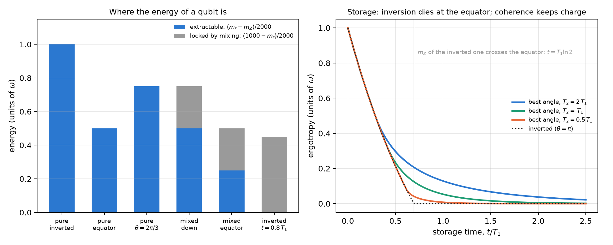
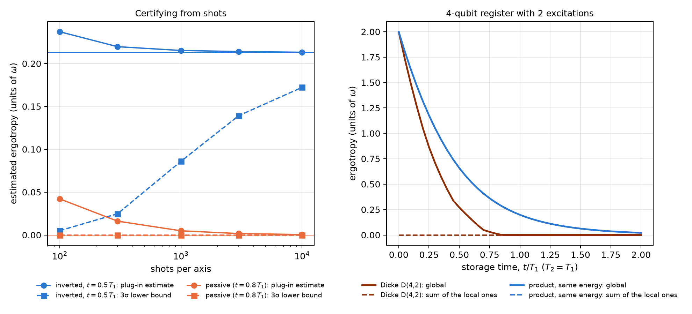
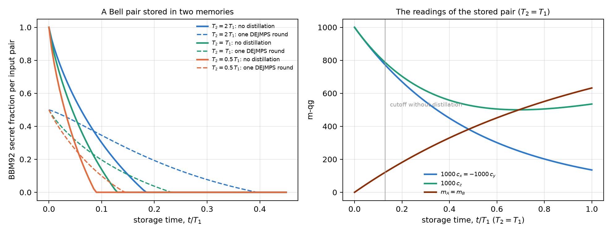

19 Quantum batteries and networks
A quantum battery is a system that stores energy to deliver it later as work. The smallest one is a qubit with \(H=\omega|1\rangle\langle1|\): charging it means bringing it towards \(|1\rangle\), and discharging it means returning it to \(|0\rangle\) with a unitary operation. The practical question is not how much energy the qubit has, but how much can be taken out, which is its ergotropy. This chapter reads it on the scale of Chapter 1. Energy, ergotropy and the part nobody can take out are three distances between readings. With that, the chapter answers how to charge a battery that will wait with T1 and T2, how much it costs to certify its charge from shots, and where the charge of a qubit register sits when it lives in the correlations. The last section turns to networks: a Bell pair stored in two memories is another thing stored with T1 and T2, and its useful time is read the same way.
19.1 From the base: three distances between readings
A qubit with readings \((m_X,m_Y,m_Z)\) and radius \(m_r=\sqrt{m_X^2+m_Y^2+m_Z^2}\) has energy \(\omega(1000-m_Z)/2000\): the distance of its Z reading from the north pole, which is the ground state. Its ergotropy, the maximum work a unitary operation extracts, is (notes, §56)
\[ W=\omega\,\frac{m_r-m_Z}{2000}, \]
and what is left unextracted, the energy of the passive state, is \(\omega(1000-m_r)/2000\). The energy splits between how far the state sits below the top of its own sphere, \(m_r-m_Z\), and how much radius the sphere lost, \(1000-m_r\). A unitary rotates the state without changing its radius, so the best it can do is bring it to the top of its sphere, \(m_Z=m_r\). The part lost to mixing is out of reach of any unitary.
For a pure state, \(m_r=1000\) and \(W=\omega\sin^2(\theta/2)=\omega\,p_1\): the ergotropy is the probability equation of Chapter 1, with the qang angle as the charging angle (checked to \(2\cdot10^{-16}\)). The notes also split \(W=W_{\text{inc}}+W_{\text{coh}}\), with \(W_{\text{inc}}=\omega\max(0,-qg_Z)\) (population inversion) and \(W_{\text{coh}}=\tfrac{\omega}{2}(r-|qg_Z|)\) (coherence). The formulas match the general eigenvalue expression to \(3\cdot10^{-16}\) on 200 random states.
| state | \(m_Z\) | \(m_r\) | energy | extractable | locked by mixing |
|---|---|---|---|---|---|
| pure, inverted | −1000 | 1000 | 1.000 | 1.000 | 0 |
| pure, on the equator | 0 | 1000 | 0.500 | 0.500 | 0 |
| pure, \(\theta=2\pi/3\) | −500 | 1000 | 0.750 | 0.750 | 0 |
| mixed, down | −500 | 500 | 0.750 | 0.500 | 0.250 |
| mixed, on the equator | 0 | 500 | 0.500 | 0.250 | 0.250 |
| inverted and aged, \(t=0.8\,T_1\) | +101 | 101 | 0.449 | 0 | 0.449 |
The last row is a passive battery: it has almost half a unit of energy and delivers nothing, because it sits at the top of its sphere (\(m_Z=m_r\)). This happens to every inverted battery when its Z reading crosses the equator upwards.
19.2 Storage with T1 and T2: inversion dies at the equator
A battery charged at angle \(\theta\) ages as
\[ m_Z(t)=1000\big[1-(1-\cos\theta)\,e^{-t/T_1}\big],\qquad m_\perp(t)=1000\sin\theta\,e^{-t/T_2}. \]
The inverted battery (\(\theta=\pi\)) has no coherence and stores only inversion: \(m_Z=1000(1-2e^{-t/T_1})\), which crosses the equator at \(t=T_1\ln2\). There its ergotropy is zero, and it does not come back. A tilted battery stores less at first, but its coherence keeps it below the top of its sphere after the crossing, as long as \(T_2\) allows.
| \(T_2/T_1\) | crossover \(t_c\) | \(t=0.5\,T_1\) | \(t=T_1\) | \(t=2\,T_1\) |
|---|---|---|---|---|
| 2 | \(0.288\,T_1=\ln(4/3)\) | \(0.70\pi\): 0.297 / 0.213 / 0.240 | \(0.58\pi\): 0.129 / 0 / 0.122 | 0.038 / 0 / 0.038 |
| 1 | \(0.405\,T_1=\ln(3/2)\) | \(0.78\pi\): 0.234 / 0.213 / 0.165 | \(0.59\pi\): 0.054 / 0 / 0.050 | 0.005 / 0 / 0.005 |
| 0.5 | \(0.618\,T_1\) | \(\pi\): 0.213 / 0.213 / 0.073 | \(0.60\pi\): 0.008 / 0 / 0.007 | ≈ 0 |
| 0.2 | \(0.692\,T_1\) | \(\pi\): 0.213 / 0.213 / 0.004 | ≈ 0 | ≈ 0 |
- The charging rule. If the battery will be used before \(t_c\), charge it fully (\(\theta=\pi\)). Otherwise tilt it, to about \(0.6\pi\) at \(t=T_1\). The crossover solves \(x^{2T_1/T_2-1}=2(2x-1)\) with \(x=e^{-t_c/T_1}\), which comes from a small-tilt analysis and matches the numerical optimum to \(10^{-6}\); for \(T_2=2T_1\) and \(T_2=T_1\) it gives the closed forms \(\ln(4/3)\) and \(\ln(3/2)\).
- The crossover tends to the equator. As \(T_2\) shrinks, \(t_c\) tends to \(T_1\ln2=0.693\,T_1\), the moment the Z reading of the inverted battery crosses the equator. Without coherence there is nothing to tilt.
- Coherence buys time only when \(T_2\) is comparable to \(T_1\). At \(t=T_1\) a tilted battery stores \(0.13\,\omega\) (\(T_2=2T_1\)) or \(0.05\,\omega\) (\(T_2=T_1\)), where the inverted one stores nothing. At \(T_2=0.2\,T_1\) it buys nothing. In trapped ions, where T1 hardly exists, always charge fully.

19.3 Certifying the charge from shots
Ergotropy is estimated from shots on the three axes, and the formula has a trap. The estimated radius comes out inflated, because the noise of the three axes adds in quadrature: \(E[\hat r^2]=r^2+3\sigma^2\). And a passive battery sits right at the top of its sphere, so any inflation of the radius makes it look charged.
| shots per axis | 100 | 300 | 1000 | 3000 | 10,000 |
|---|---|---|---|---|---|
| inverted, \(t=0.5\,T_1\) (truth 0.213): plug-in | 0.237 (0.60) | 0.220 (0.54) | 0.215 (0.52) | 0.214 (0.52) | 0.213 (0.50) |
| inverted: 3σ lower bound | 0.005 | 0.025 | 0.086 | 0.139 | 0.172 |
| passive, \(t=0.8\,T_1\) (truth 0): plug-in | 0.042 (0.99) | 0.016 (1.00) | 0.005 (1.00) | 0.002 (1.00) | 0.001 (1.00) |
| passive: 3σ lower bound | 0 | 0 | 0 | 0 | 0 |
- The plug-in estimate overestimates in more than half of the runs, and reports charge in a passive battery in 99–100% of them.
- The 3σ bound is never unsafe, but it is expensive: with 1000 shots per axis it certifies 0.086 of \(0.213\,\omega\), and with \(10^4\) still only 81%. A nearly discharged battery cannot be certified with any reasonable number of shots.
It is the same problem as the QRNG of Chapter 18: a quantity that depends on the radius, read next to an edge.
19.4 Registers: charge locked in the correlations
In a register of qubits the charge can live in the correlations. The notes compare two batteries of 4 qubits with 2 excitations, both with energy \(2\omega\), aged with local noise (\(T_2=T_1\)):
- the Dicke state \(D(4,2)\), the even superposition of the six registers with two ones;
- a product of four qubits on the equator, with the same energy.
Read qubit by qubit, they are opposites. In the Dicke state each qubit reads \((m_X,m_Y,m_Z)=(0,0,0)\): local radius zero, the centre of the sphere, a passive qubit. In the product each qubit reads \((1000,0,0)\): radius 1000, ergotropy \(\omega/2\). Yet the mean Z reading of the register is identical in both at all times (0, 95, 259, 503 and 777 m-qg for \(t=0\), 0.1, 0.3, 0.7 and 1.5 \(T_1\)), and does not tell them apart.
| \(t/T_1\) | 0 | 0.1 | 0.3 | 0.7 | 1.5 |
|---|---|---|---|---|---|
| Dicke: global ergotropy | 2.000 | 1.489 | 0.710 | 0.049 | 0 |
| Dicke: sum of the local ones | 0 | 0 | 0 | 0 | 0 |
| product: global = sum of the local ones | 2.000 | 1.629 | 1.051 | 0.407 | 0.063 |
| mean \(m_Z\) of the register (m-qg) | 0 | 95 | 259 | 503 | 777 |
- The Dicke charge is locked. All of it is extractable with a global operation, and none with one-qubit operations: the sum of the local ergotropies is zero. The product’s charge is all local.
- The local radius tells them apart; the mean reading does not. The sum of the local ergotropies, which comes from the three readings of each qubit, separates one battery from the other.
- Locked charge is more fragile under local noise: 0.71 against \(1.05\,\omega\) at \(0.3\,T_1\), and 0.05 against \(0.41\,\omega\) at \(0.7\,T_1\).
Local radius zero is not new in the book. It is what the qubits of a Bell pair in a network read (Chapter 12, §57), and the counting qubits of Shor with \(N=21\) before the QFT (Chapter 16). In all three cases what matters is in the correlations, and a one-qubit reading can only say that it is not in that qubit.

19.5 Networks: a Bell pair stored in two memories
A quantum network also stores something in memories with T1 and T2: the Bell pairs it distributes among its nodes. Chapter 12 read a pair in qg (three correlators and two local biases) and used that reading to choose how to distil it. The question of this section is still open, and it is the battery’s question: how long a pair can wait in memory before it is no longer useful. For \(|\Phi^+\rangle\) with both halves stored for a time \(t\), the readings have closed forms (notes, §57; they match the density matrix to \(5\cdot10^{-16}\)):
\[ c_x=-c_y=e^{-2t/T_2},\qquad c_z=1-2g+2g^2,\qquad m_A=m_B=1000\,g,\qquad g=1-e^{-t/T_1}. \]
The local biases \(m_A\) and \(m_B\) rise from zero: it is the T1 witness on a shared pair, the same reading that shifted the centre of the image of the sphere in BB84 (Chapter 17). The pair is good for a BBM92 key while \(1-h(Q_X)-h(Q_Z)>0\), with \(Q_X=(1-c_x)/2\) and \(Q_Z=(1-c_z)/2\).
| \(T_2/T_1\) | 2 | 1 | 0.5 | 0.2 |
|---|---|---|---|---|
| cutoff without distillation (\(T_1\)) | 0.184 | 0.129 | 0.088 | 0.051 |
| readings at the cutoff: \(1000\,c_x\) / \(1000\,c_z\) / \(m_A\) (m-qg) | 832 / 720 / 168 | 773 / 787 / 121 | 702 / 845 / 85 | 598 / 905 / 50 |
| cutoff with one DEJMPS round (\(T_1\)) | 0.395 | 0.232 | 0.144 | 0.076 |
| distilling pays after (\(T_1\)) | 0.085 | 0.083 | 0.056 | 0.032 |
- A pair lasts much less than a battery. The inverted battery keeps charge up to \(0.69\,T_1\); the pair stops giving key at \(0.05\)–\(0.18\,T_1\), because the key needs correlators near the Shor–Preskill threshold of Chapter 16: 780 m-qg when the error is equal in both bases, and here shared between them (832 and 720 m-qg at \(T_2=2T_1\)). What is stored is a correlation, and the key needs it nearly intact.
- One distillation round almost doubles the useful time when T1 limits it (0.184 → 0.395 at \(T_2=2T_1\)). It costs half the pairs, so with fresh pairs it lowers the key per input pair. Distil only after the crossover in the last row, and that crossover is read from the aged correlators.
- Both memories follow the same underlying rule. In the battery, coherence (\(T_2\)) buys time after the inversion crossing. In the pair, distillation buys time after its own crossover. In both cases the crossover comes from the readings.

19.6 What remains open
Everything is exact or simulated: there is no hardware run. Missing are a real battery charged at different angles on a device with \(T_2\approx T_1\), where the charging rule can be tested, and the preparation of a Dicke \(D(4,2)\) with a measurement of its local ergotropy. On the network side, distillation is computed on the twirled (Bell-diagonal) state with perfect local gates, and the cutoff assumes equal memories at the two nodes.
19.7 Without qang and with qang
| action | without qang | with qang | difference |
|---|---|---|---|
| compute the ergotropy | eigenvalues of \(\rho\) and the passive energy | \((m_r-m_Z)/2000\) | equivalent: it is the standard one-qubit formula written in readings |
| know how much energy nobody can take out | energy of the passive state | \((1000-m_r)/2000\), the lost radius | in favour, modest: the split is read at a glance |
| ergotropy of a pure state | \(\omega\sin^2(\theta/2)\) | the probability equation of Chapter 1, \(\omega\,p_1\) | equivalent; it shows the Chapter 1 base is the base of the charge |
| decide how to charge | numerical optimisation of the angle | closed crossover \(x^{2T_1/T_2-1}=2(2x-1)\); inversion dies at the equator crossing | in favour: a closed rule and a picture (the equator); the rule is a contribution of the notes, not of the unit |
| certify the charge | plug-in estimate | the passive battery sits at the top of its sphere, and the inflated radius makes it “charged” | in favour as a diagnosis; the cure, the 3σ bound, is standard statistics |
| tell local from locked charge | global and local ergotropy by tomography | local radius of each qubit; the mean reading is useless | equivalent in the computation, in favour in the reading: it is the same local radius zero of Chapters 12 and 16 |
| decide how long to store a Bell pair | fidelity and key rate of the aged state | closed-form correlators and biases; cutoff and distillation crossover read from them | equivalent in the computation; cutoffs are known, the closed form and the crossover are contributions of the notes |
Balance. The formulas are the standard ones for the ergotropy of a qubit, and batteries with coherence-assisted storage or locked charge are already in the literature. What the Chapter 1 base adds is the reading: the energy splits between how far the state sits below the top of its sphere and how much radius it lost. With that reading one sees why the inverted battery dies at the equator, why the plug-in estimate sees charge where there is none, and why a Dicke register looks discharged qubit by qubit. The charging rule with its closed crossover is a contribution of the notes.
19.8 In code
import math
import sys
sys.path.insert(0, "examples")
import battery_ergotropy_qg as BT
m_x, m_y, m_z = 500.0, 0.0, 0.0 # mixed, on the equator (m-qg)
m_r = math.sqrt(m_x**2 + m_y**2 + m_z**2)
(1000 - m_z) / 2000, (m_r - m_z) / 2000, (1000 - m_r) / 2000 # energy 0.5, extractable 0.25, locked 0.25
BT.ergotropy(0.5, 0.0, 0.0) # 0.25, the same computation
BT.crossover_time_analytic(1.0), math.log(1.5) # 0.405 and 0.405: the crossover with T2 = T119.9 Summary
- The energy of a qubit splits between the extractable part, \((m_r-m_Z)/2000\), and the part locked by mixing, \((1000-m_r)/2000\); for a pure state the ergotropy is the probability equation of Chapter 1, \(\omega\,p_1\).
- An inverted battery dies when its Z reading crosses the equator, at \(t=T_1\ln2\). A tilted battery keeps charge after that if \(T_2\) is comparable to \(T_1\), and the charging rule has a closed crossover: \(\ln(4/3)\) for \(T_2=2T_1\), \(\ln(3/2)\) for \(T_2=T_1\).
- The plug-in estimate of the ergotropy overestimates, and reports charge in a passive battery in almost every run; the 3σ bound is safe but expensive.
- In a Dicke register all the charge is in the correlations: each qubit reads the centre of the sphere, the sum of the local ergotropies is zero, and the mean reading does not tell it apart from a product with the same energy.
- A stored Bell pair gives key only up to \(0.05\)–\(0.18\,T_1\), much less than a battery; one distillation round almost doubles that time, and pays only after a crossover read from the correlators.